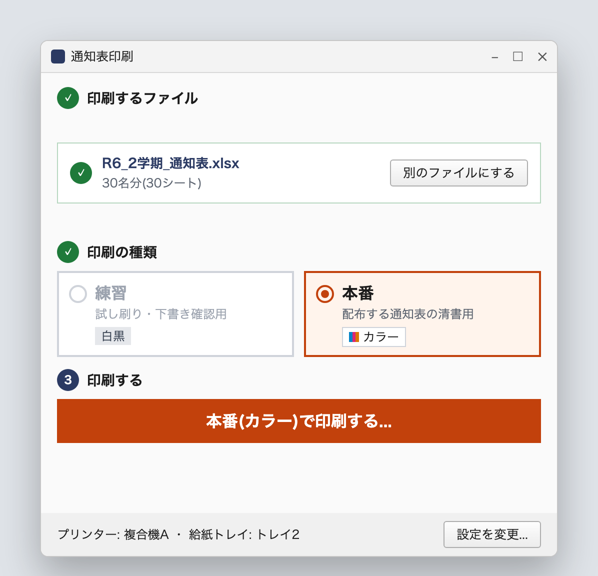
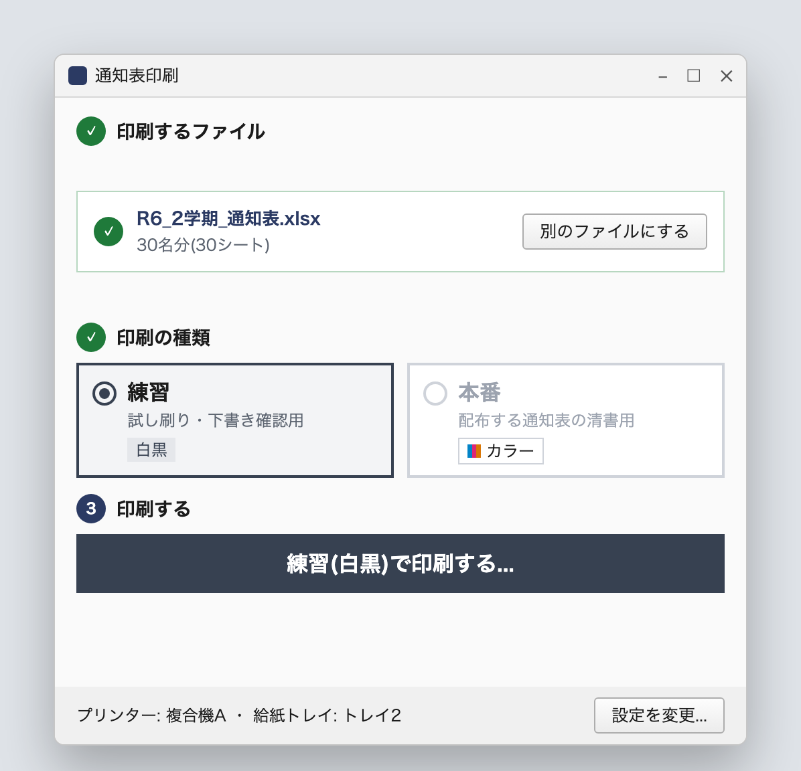
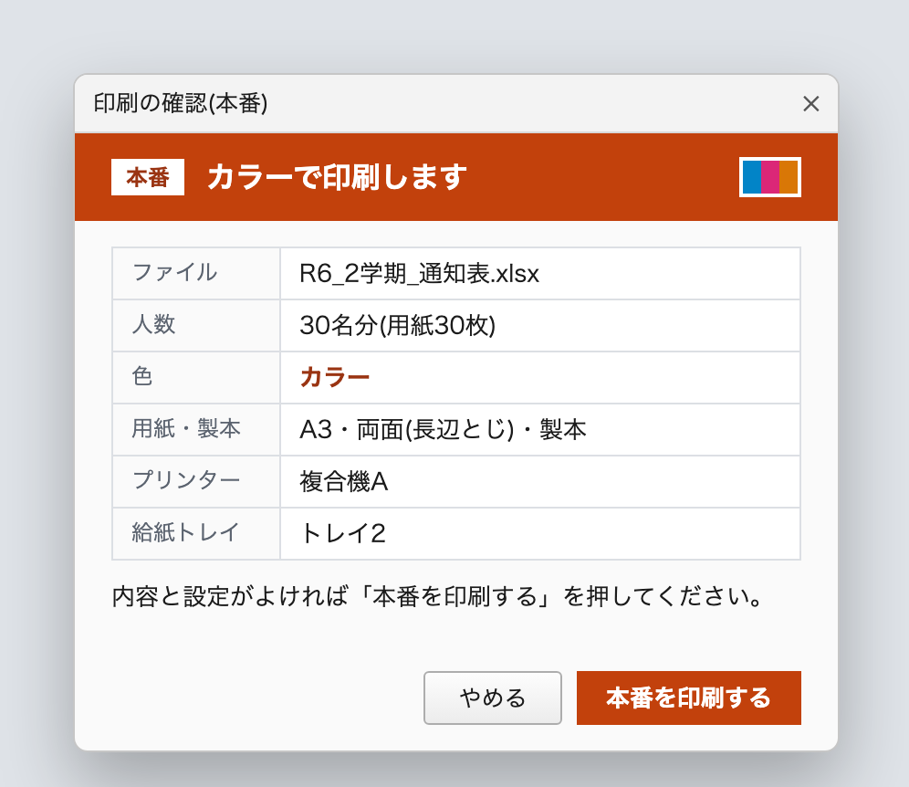
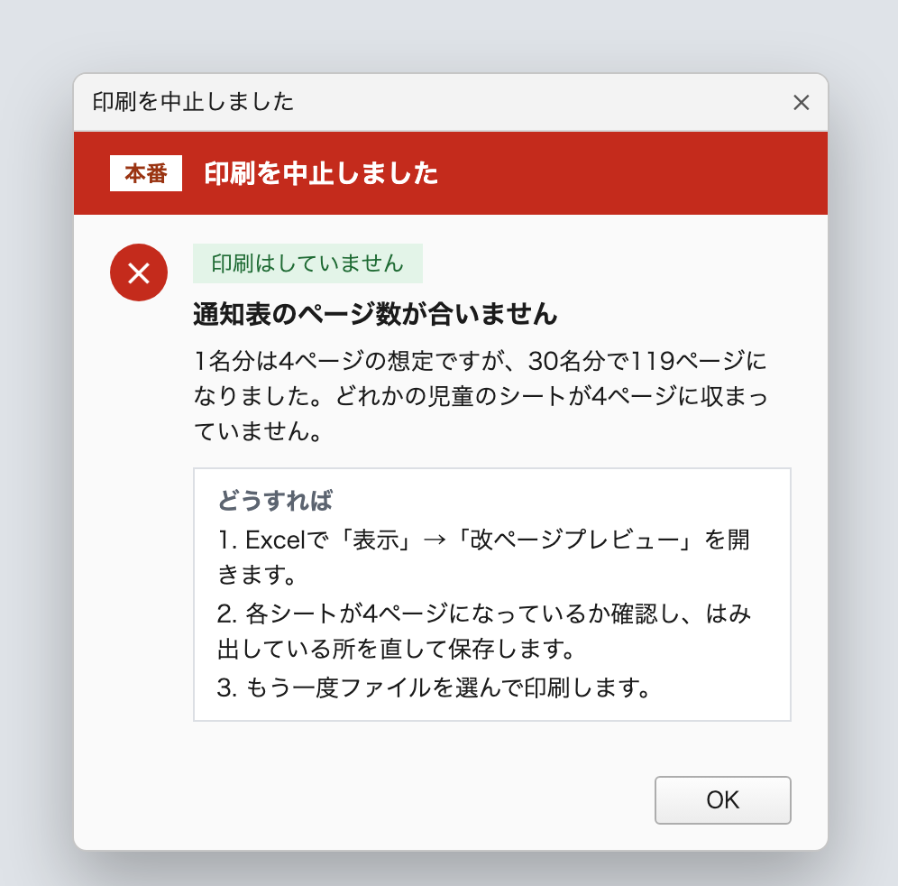

- 3ステップ印刷までの操作ファイルを選ぶ → 種類を選ぶ → 印刷する
- 1回全員分の印刷クラス全員分を1つの印刷ジョブにまとめて送る
- 0回設定の選び直し色・両面・用紙・製本はアプリが毎回自動で指定
- 79件自動テスト面付けの計算や失敗時の動きを機械的に確認
PROBLEM → SOLUTION
「1人ずつ開いて、毎回設定」を、ボタン1つに。
通知表はExcelで1人1シートの形で作られていました。困っていたのは、作ることより「印刷」の方でした。
1人分ずつ、同じ操作を人数分くり返す
- 1人分のシートを開く
- 印刷画面からプリンターの詳細設定を開く
- 色・両面とじ・用紙サイズ・製本・給紙トレイを毎回選び直す
- 印刷する
- 手間がかかる — 同じ設定操作を人数分くり返していた
- 刷り直しが起きる — 試し刷り用の白黒と、配布用のカラーの切り替え忘れ
- Excelでは解決できない — プリンターの詳細設定はExcelのファイルに保存できない
3ステップで、全員分が冊子になって出てくる
- ① ファイルを選ぶ — ドラッグ&ドロップでもOK。人数がすぐ表示される
- ② 印刷の種類を選ぶ — 「練習(白黒)」か「本番(カラー)」
- ③ 印刷する — 確認画面で内容を見てから実行
色・両面とじ・用紙サイズ・給紙トレイは、アプリが印刷のたびに自動で指定します。製本(冊子にするためのページの並べ替え)もアプリ自身が行うので、プリンター側の製本機能の有無や設定に左右されません。
SCREENS
パソコンに不慣れな方でも迷わない画面
上から順に選べば印刷できる3段構成です。印刷前には必ず確認画面を出し、失敗したときも「何が起きたか」「次に何をすればよいか」がわかるようにしました。




FEATURES
失敗できない書類だから、安全策を重ねました
通知表は配布する大切な書類で、刷り直しは用紙もトナーも時間もむだになります。「速く印刷できる」だけでなく、「間違ったまま印刷しない」ことを重視して設計しました。
製本はアプリが自前で面付け
冊子にするためのページの並べ替えと、A4の2ページをA3の1枚に並べる処理をアプリ自身が計算します。プリンターの機種ごとの製本機能に頼らないため、仕上がりが安定します。
本番と練習を取り違えない
本番(カラー)と練習(白黒)を、選択欄・印刷ボタン・確認画面・エラー画面のすべてで色と文字の両方で区別。印刷前の確認画面も必ず表示します。
枚数が合わなければ印刷しない
- PDFにした時点で「人数×1人分のページ数」と一致するかを照合し、ずれていれば中止
- 設定用などの非表示シートは自動で除外
- Excelを起動せずに人数を数え、選んだ直後に表示
同じファイルを二重に印刷しない
印刷が終わると、選んでいたファイルを画面から外し、種類も「本番」に戻します。続けてボタンを押して同じ通知表を刷ってしまう事故を防ぎます。
パソコンの環境を汚さない
- プリンターの既定の設定は書き換えない(印刷ごとに指定)
- 元のExcelファイルは読むだけで、変更しない
- 作業中の別のExcelウィンドウに影響しない
- 途中で作る一時ファイルは必ず削除。管理者権限も不要
失敗しても、状況がわかる
原因(ページ数が合わない/プリンターで印刷できない/時間切れ など)ごとに対処を案内し、「印刷はしていません」「途中まで印刷された可能性があります」のどちらかを必ず表示。技術的な詳細はコピーして担当者に伝えられます。
HOW IT WORKS
1人分の4ページを、A3の1枚に面付けして冊子に
ExcelをいったんPDFに書き出し、アプリが中綴じ冊子の順番にページを並べ替えてから印刷します。人ごとに独立した用紙へ面付けするので、他の人のページが混ざることはありません。
A3の表に「4・1ページ」、裏に「2・3ページ」を配置して両面印刷し、真ん中で折ると1〜4ページの順に並んだ冊子になります。並べ替えはアプリが計算するため、プリンターに求めるのは「A3・両面・カラー/白黒」で印刷することだけです。
PROCESS
聞き取りから現地導入まで
- 現状の聞き取り実際の操作手順と、どこで手間やミスが起きているかを確認。改善案を3段階で、工数の見積もりを付けて提案しました。
- 方式の見直し最初はExcelマクロで作り始めましたが、製本などプリンター固有の設定が壁に。アプリ側で面付けまで行う今の方式に設計を切り替えました。
- 実装とテストWindowsとmacOSの両方で動くアプリとして実装。面付けの計算や失敗時の動きは自動テストで確認しています。
- 現地での導入実際のプリンターで試し刷りし、用紙の向きや裏面の天地を調整して本番の印刷まで確認しました。
OVERVIEW
開発の概要
- 種類
- デスクトップアプリ(Windows / macOS 両対応)。インストール不要で、アプリ1つを置けば動きます
- 担当範囲
- 現状の聞き取り・改善案の提案・設計・実装・テスト・現地での導入と調整(一人で担当)
- 納品物
- アプリ本体と設計書一式(要件定義書・基本設計書・詳細設計書・画面設計書・帳票設計書・メッセージ定義書・テスト仕様書)
- 使用技術
- Python
- tkinter
- PyMuPDF
- pywin32
- SumatraPDF
- CUPS
- xlwings
- PyInstaller
- GitHub Actions
- pytest
Excelの「毎回同じ手作業」、まとめて減らしませんか
印刷・転記・集計など、くり返しの作業の自動化をご相談いただけます。まだ内容が決まっていなくても大丈夫です。